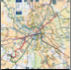

Pencil Code User Meeting 201124-28 October 2011 Observatoire Midi-Pyrénées, Toulouse (France) |
|
Hotel informationsAll participants are housed in the 3* hotel ``Residhome Toulouse Occitania'' whom this adress is:
Residhome Toulouse Occitania
Be careful: the hotel reception closes at 8:00PM during the week-end (10:00PM otherwise) therefore if you plan to arrive later saturday or sunday evening, please call before the reception! Every participant is already checked in then you have to give your name to get the needed informations (access code to your room). Maybe a good idea is to first say that you are participating to a meeting organized by me (a.k.a. the ``Dintrans meeting'') such that the reception will immediately link. Where is the meeting?The meeting is in the conference room named ``Coriolis'' of the ``Observatoire Midi-Pyrénées'' (nickname: OMP) whom the adress is:
Observatoire Midi-Pyrénées
How to get to OMP from the hotel?In Toulouse we have two metro lines named A and B. The hotel is located just near the metro station ``Les arènes'' line A. Take it in the direction ``Balma-Gramont'' until the station ``Jean Jaurès'' where both lines A and B cross. Then take line B in the direction ``Ramonville'' and you have two possibilities:
Map in PDF of walkings to OMP from ``Faculté de pharmacie'' or ``Ramonvile'' metro stations: map_walking.pdf General map in PDF of bus and subway in Toulouse: 
More information on transport
|